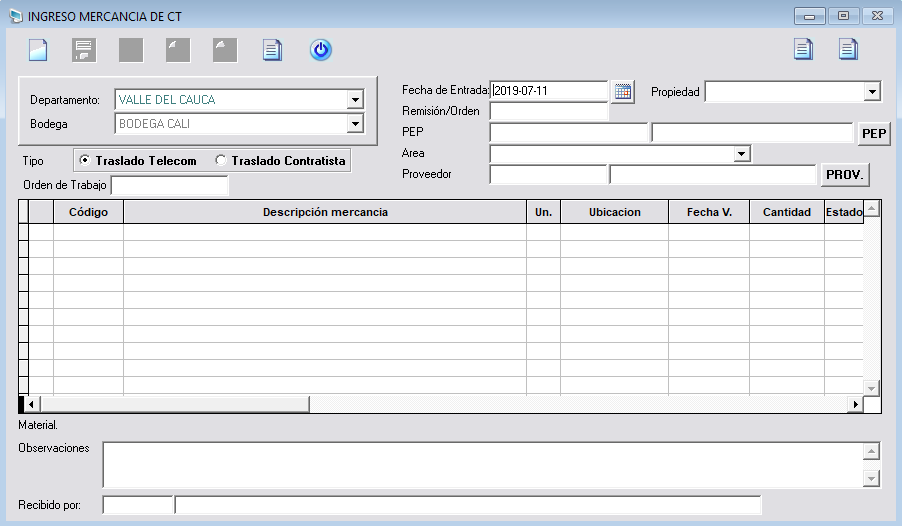

Entrada CT
Este módulo permite hacer transacciones de Entrada CT que son todos los tipos de movimientos de inventario que pueden ser realizados en el sistema. Los requisitos previos que debe tener una entrada CT es una bodega y un proveedor.
Transacciones entradas: Son transacciones que incrementan las existencias de los materiales en el inventario.
El usuario debe dar clic en el módulo Entrada CT, y se visualizará una ventana el cual se debe ingresar la información solicitada u obligatoria para hacer un nuevo registro al sistema SISCOS.
Transacciones entradas: Son transacciones que incrementan las existencias de los materiales en el inventario.
El usuario debe dar clic en el módulo Entrada CT, y se visualizará una ventana el cual se debe ingresar la información solicitada u obligatoria para hacer un nuevo registro al sistema SISCOS.

Nueva entrada CT
Esta opción se encuentra ubicada en la barra vertical superior lado izquierdo, al momento de estar ingresando la información para registrar una entrada CT en el campo PEP nos aparece un botón PEP,
el cual nos permite hacer una búsqueda de todos los registros existente de este, debido a que el usuario se le olvido el PEP que necesita entonces trasladarse a este botón y hacer su consulta correspondiente con el comodín
(
%) que le presentará todos los PEP registrados; para salir de esta ventana usamos la tecla
Esc.
Centro de costo y propiedad es lo mismo.
Centro de costo y propiedad es lo mismo.

- PEP: Se debe tener creado un PEP para poder registrar entradas CT.
- Áreas de Operación: Ya estás áreas están creadas.
- Periodo de Activación: Ninguna transacción en SISCOS se hace sin que este el periodo activo.
- Remisión/orden: Si esta entrega es amarrada a una orden de trabajo por ejemplo: Material va a esta orden de trabajo como tal única y exclusivamente. Cuando se generen los informes y el listado de existencia entonces dirá este material que queda aquí es de esta orden de trabajo.
Asimismo esta opción es para el proveedor el mismo proceso anteriormente mencionado si no que ahora es el campo Proveedor.

Posteriormente el usuario de haber ingresado toda la información requerida para el registro de una entrada se debe dar clic en el botón Nueva entrada para que la guarde y se pueda agregar material
a esa entrada y se puedan habilitar los demás botones y poder realizar el proceso.

En las observaciones es muy importante de colocarlas para cuando se generen los listados aparezcan.
En Recibido por: Es la cédula de la persona que este registrando, y que debe estar registrado en el módulo Personal. Aquí queda registrado quien realizo el movimiento en el sistema SISCOS.
En Recibido por: Es la cédula de la persona que este registrando, y que debe estar registrado en el módulo Personal. Aquí queda registrado quien realizo el movimiento en el sistema SISCOS.
Agregar material
Esta opción se encuentra ubicada en la barra horizontal superior, esta función permite al usuario poder agregar material a una de las entradas registradas en el sistema SISCOS.
El usuario debe dar clic en el botón Agregar, y se presentará una ventana que requiere de una información para poder agregar material, si al usuario se le olvido el código puede realizar una búsqueda dando clic en el botón Buscar.
El usuario debe dar clic en el botón Agregar, y se presentará una ventana que requiere de una información para poder agregar material, si al usuario se le olvido el código puede realizar una búsqueda dando clic en el botón Buscar.

Al dar clic en la opción mencionada se visualizará otra ventana para agregar el material, se pueden hacer búsquedas por los parámetros Código, Descripción, Cod.SAP, Desc.SAP y Tipo Material. Luego
a su lado se puede ingresar comodines tales como:
Comodines:
En este caso se utilizó el comodín (%) y se mostrará todos los códigos registrados en el sistema, el usuario escoge los materiales que desea para la entrada CT. Selecciona el Código y se van agregando automáticamente dando clic en la tecla Enter.
Comodines:
- (%) Todos.
- (%CABLE) Los que terminan.
- (CABLE%) Los que comiencen.
En este caso se utilizó el comodín (%) y se mostrará todos los códigos registrados en el sistema, el usuario escoge los materiales que desea para la entrada CT. Selecciona el Código y se van agregando automáticamente dando clic en la tecla Enter.

Seguidamente al ingresar materiales se debe visualizar en la lista de material que pertenecen a la entrada asignada. El usuario debe confirmar la información y terminar de llenar los campos en el listado de materiales registrados; como Cantidad cuando está ingresando la cantidad depende de la clasificación de los materiales si es Cable, Serial y Otros.
Clasificado como cable:
Si es un material Cable al momento de dar clic se visualizará otra ventana donde pide los tramos de ese cable para que se haga el registro.
Clasificado como cable:
Si es un material Cable al momento de dar clic se visualizará otra ventana donde pide los tramos de ese cable para que se haga el registro.

El usuario debe dar clic en el botón Agregar que se encuentra ubicado en el ingreso de tramos en la barra vertical superior y luego en
el botón
Guardar y se presentará un mensaje de información que si está seguro de asignar tramos al cable para que haga el registro correctamente en el sistema.

El sistema presentará un mensaje de información el cual se debe dar clic en el icono Sí, y la cantidad ha sido registrada correctamente. Ver en la lista de materiales.
Clasificados como serial:
Si el usuario al ingresar la cantidad y se encuentra que el material es clasificado como serial se mostrará la siguiente tabla.
Clasificados como serial:
Si el usuario al ingresar la cantidad y se encuentra que el material es clasificado como serial se mostrará la siguiente tabla.

El cual se debe configurar para realizar la entrada exitosamente.
Cargar archivo ingreso seriales: Esta ventana permite al usuario ubicarse y comenzar a Pistolear cada serial para ir agregando uno a uno, no es muy recomendable por problemas de energía porque si se va la luz se llevaba pistoleado 200 seriales se pueden perder y hay que hacer nuevamente el proceso, se pistolea en Excel y se guarda el archivo para luego cargarlo en la opción de Cargar archivo en la ventana que se visualiza de Ingreso de seriales.
El usuario debe tener presente que el campo Ubicación del producto es obligación ingresarlo y Fecha de vencimiento si tiene y si no también puede ser la fecha de la garantía, para cuando el usuario saque el informe de existencia le diga que el material serial está próximo a que se le vence la garantía, la ventaja de este proceso es tener un control en los materiales. Antes de hacer el registro de la entrada todos los campos requeridos tiene que estar completos, si no se mostrará un mensaje de información que debe ingresar el campo.
Cargar archivo ingreso seriales: Esta ventana permite al usuario ubicarse y comenzar a Pistolear cada serial para ir agregando uno a uno, no es muy recomendable por problemas de energía porque si se va la luz se llevaba pistoleado 200 seriales se pueden perder y hay que hacer nuevamente el proceso, se pistolea en Excel y se guarda el archivo para luego cargarlo en la opción de Cargar archivo en la ventana que se visualiza de Ingreso de seriales.
El usuario debe tener presente que el campo Ubicación del producto es obligación ingresarlo y Fecha de vencimiento si tiene y si no también puede ser la fecha de la garantía, para cuando el usuario saque el informe de existencia le diga que el material serial está próximo a que se le vence la garantía, la ventaja de este proceso es tener un control en los materiales. Antes de hacer el registro de la entrada todos los campos requeridos tiene que estar completos, si no se mostrará un mensaje de información que debe ingresar el campo.
Carga archivos
Hay 3 maneras de hacerlo a continuación se presentaran.
 Para cargar archivos planos se debe guardar el archivo formato de texto delimitado por tabulaciones y se crean las respectivas columnas necesarias. Se carga N seriales, valida Si existe o No, si
no es a través de los archivos se puede agregar con el botón .
Para cargar archivos planos se debe guardar el archivo formato de texto delimitado por tabulaciones y se crean las respectivas columnas necesarias. Se carga N seriales, valida Si existe o No, si
no es a través de los archivos se puede agregar con el botón .
Estructura de Archivo de Carga Entrada:
Archivo 1: Este archivo es para Serial, se crean 4 columnas las cuales una es obligatoria como el serial y las demás si no se ingresan las pone en blanco al momento de cargar, solo que cuando se va a validar la información no va encontrase ningún resultado.
Se pueden subir materiales que no son serializados o los materiales que están clasificados como Otros. Al momento de hacer inventario inicial lo necesario es que la planilla venga clasificados como otros.
Ejemplo: Código estado siempre debería ir 02 bueno, 03 malo en sí que se tenga una tabla de codificación.
Archivo 2: Se requiere armar un archivo con todos los seriales pero especificando, estos son seriales de este código estos son seriales de un solo archivo, para guardar la entrada.
Archivo 3: Es para cable un archivo para poder armar las bobinas al inventario inicial, se arma un solo archivo de texto y no por cada referencia.
Con cualquiera de estos archivos sirve para el inventario inicial para que salga lo más rápido posible y no estar buscando código por código.
El usuario sabrá visualizar que archivo va escoger, es decir el que mejor le sea útil para su proceso.
Se deben armar 3 archivos:
Estructura de Archivo de Carga Entrada:
Archivo 1: Este archivo es para Serial, se crean 4 columnas las cuales una es obligatoria como el serial y las demás si no se ingresan las pone en blanco al momento de cargar, solo que cuando se va a validar la información no va encontrase ningún resultado.
Se pueden subir materiales que no son serializados o los materiales que están clasificados como Otros. Al momento de hacer inventario inicial lo necesario es que la planilla venga clasificados como otros.
Ejemplo: Código estado siempre debería ir 02 bueno, 03 malo en sí que se tenga una tabla de codificación.
Archivo 2: Se requiere armar un archivo con todos los seriales pero especificando, estos son seriales de este código estos son seriales de un solo archivo, para guardar la entrada.
Archivo 3: Es para cable un archivo para poder armar las bobinas al inventario inicial, se arma un solo archivo de texto y no por cada referencia.
Con cualquiera de estos archivos sirve para el inventario inicial para que salga lo más rápido posible y no estar buscando código por código.
El usuario sabrá visualizar que archivo va escoger, es decir el que mejor le sea útil para su proceso.
Se deben armar 3 archivos:
- Una planilla para materiales otros.
- Una planilla para materiales serializados.
- Una planilla para materiales cable.
Eliminar
Esta función se encuentra ubicada en la barra horizontal superior, se debe dar clic en la opción Eliminar y permite al usuario poder eliminar materiales que no crea útil para cargarlos en entradas
CT.

Registrar
Esta función se encuentra ubicada en la barra vertical superior lado izquierdo, se debe dar clic en el botón Registrar y el sistema mostrará un mensaje de información que si está seguro de registrar
la entrada cuando ya se tiene toda la configuración de los materiales listos en el sistema.

El usuario debe dar clic en el icono Sí, para que confirme la nueva entrada y el sistema presentará un nuevo mensaje de información que se registró correctamente con el número de la entrada y si desea imprimir el reporte de entrada Sí o No.

Si el usuario da clic en el icono Sí arrojará el informe de entrada realizada en el sistema SISCOS.

Si el usuario da clic en el icono No, le saldrá un mensaje de información que si desea habilitar la reserva.
Salir
Para salir del módulo es a través del botón Salir que se encuentra ubicado en la barra horizontal superior, dar clic.